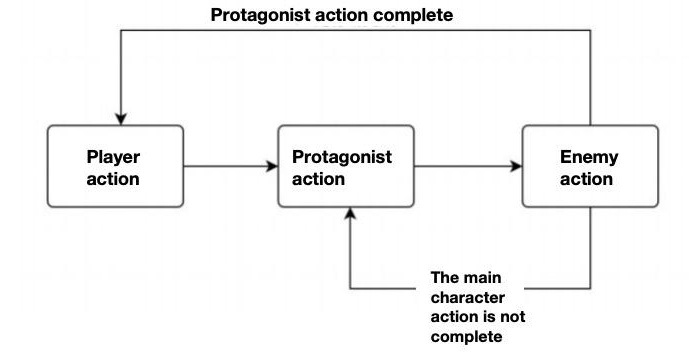
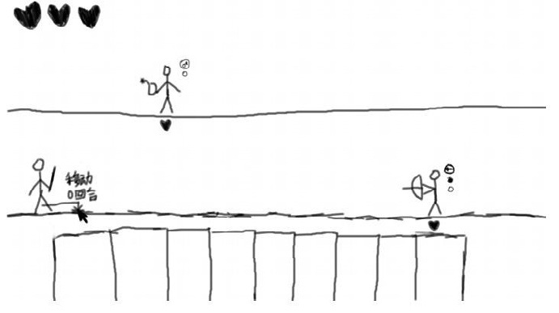
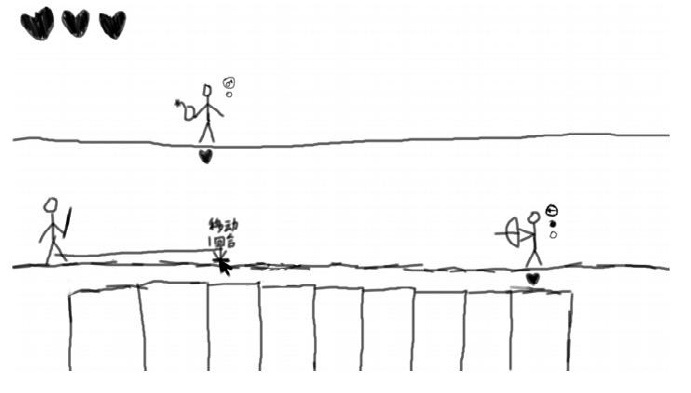
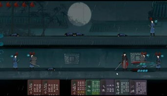
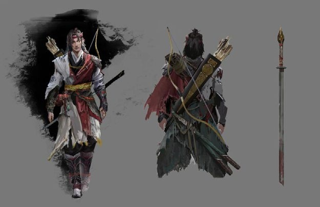
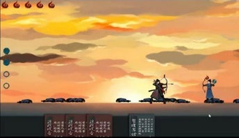

Game audio · Unity · Game design
Blood Tear Rain
A tactical card-based game with 2D side-scrolling combat.
血雨侠客录 / documented as “Blood Rain” in the original portfolio

The project
Project overview
A card-based, side-scrolling combat game that gives the player space to think without losing the energy of action. Each turn begins with time suspended: choose cards and plan a move, then release the turn to see the player and enemies act.
Role & contributions
My role combined lead game design, sound design, and Unity development. Working across these areas connected the game’s moment-to-moment interactions with its broader rhythm of planning and execution.
Combat system
The combat system makes the cost of a decision visible. Short moves can happen within a turn; longer movement uses additional turns. Enemy intent and preparation are displayed before actions resolve. An attack can interrupt an enemy’s planned action, changing the next beat of combat.
Project trailer
Project trailer
Development notes
Development documentation
Interaction sketches, gameplay images, and visual context from the original project. Images retain their full frame.












Gameplay walkthrough